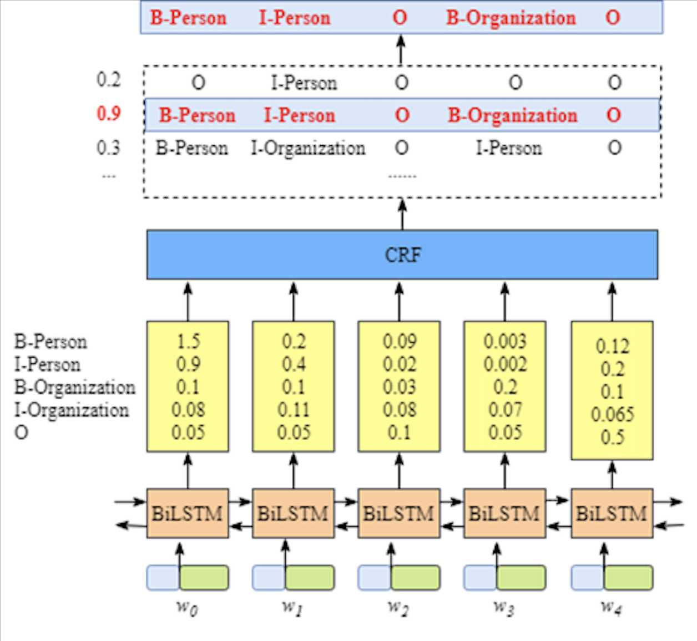

在上一篇中, 比较详细地讲解了条件随机场CRF的原理, 本篇主要针对CRF的实例演示.
将在一个命名体识别的任务上, 分别利用单独的CRF模型, Bi-LSTM, 以及Bi-LSTM+CRF来进行建模, 并简单比较几种方法的结果.
数据准备
这里使用的数据, 是1998人民日报语料集实体识别标注集, 标注形式为BIO, 共有23061条语料.
1 | # 将原始数据按样本进行整理 |
1 | train_x, train_y = clean_data('./data/NER/data_train.txt') |
1 | # 样本量 |
1 | train x: 11683, train y: 11683 |
1 | all_x = train_x + dev_x + test_x |
1 | 4692 |
常用汉字4千多, 确实是这样的.
CRF
比较常用的CRF工具包有CRF++, 比较经典的包, 支持命令行模式, 也有Python接口; sklearn-crfsuite, 从名字就可以看得出来, 其API是仿sklearn的.
这里使用sklearn-crfsuite, 下面是代码的主要部分.
1 | # 这里仿照sklearn-crfsuite文档中的做法来构造特征 |
1 | train_ft = [sent2features(s) for s in train_x] |
1 | # 训练模型 |
由于sklearn_crfsuite这个包并不支持多线程, 所以开始训练后可以先去干点别的, 比如恰个水果.
1 | # 保存模型 |
1 | # 评估 |
1 | # 评估模型 验证集 |
1 | Accuracy: |
1 | # 评估模型 测试集 |
1 | Accuracy: |
如果还想提高准确性, 可以尝试添加更多的特征, 并对正则系数进行交叉验证调参.
此外, sklearn_crfsuite还支持查看各个特征, 包括转移特征和发射特征的权重系数, 从中可以看到哪些特征模型是重要的, 是否合理等.
Bi-LSTM+CRF
在上一篇讲解CRF原理的时候, 说过CRF模型和深度学习模型各有优缺点, 而一种不错的方式就是将它们结合起来使用.
而具体的结构是什么样的呢, 单纯的Bi-LSTM在每个时步上的输出, 可以看成是基于当前给定的序列$X$, 对应目标为$y$的概率, 即$P(y|X)$.
这明显没有考虑到目标序列$Y$本身所蕴含的模式, 所以才在其输出之上, 加了CRF模型. 模型结构如下:

关于Bi-LSTM+CRF具体的理论, 可以参考这篇博客, 写得非常详细. 这里只做一个粗略的说明.
可以设定Bi-LSTM的输出层的维度为标签数目, 看做是当前时步的$y$与$X$的分数. 那么假定Bi-LSTM的输出矩阵为$B$, $B_{t,y}$表示时步$t$目标$y$的分数.
在CRF中, 还要考虑到目标序列$Y$的模式, 假设存在一个转移矩阵$A$, $A_{y,y’}$表示两个状态之间分数.
那么给定输入序列$X$, 目标序列$Y$, 定义分数为:
对应的条件概率为:
到了这里后, 接下来优化与推断就可以结合CRF的方法来做了.
下面是代码的主要部分, 其中的CRF层, 采用了与TensorFlow2.x配合使用的tensorflow_addons.
1 | # 将原始数据按样本进行整理 |
1 | # coding=utf-8 |
1 | INFO:root:保存模型./model/NER/ckpt-1 |
小结
| 模型 | 验证集F1 | 测试集F1 |
|---|---|---|
| CRF | 0.933 | 0.930 |
| BiLSTM-CRF | 0.941 | 0.939 |
从结果可以看到, BiLSTM-CRF相比单纯的CRF, 在F1上高了近一个百分点.
通过前面的原理介绍, 以及这里的代码实践, 对CRF的由来, 具体如何运算有了一个认识. 同时通过与深度学习的结合, 也确实获得了提升. 关于CRF这一篇就告一段落了, 但是关于序列标注, 或者NER还有没有其它一些可能更好的方法呢, 以后再说~